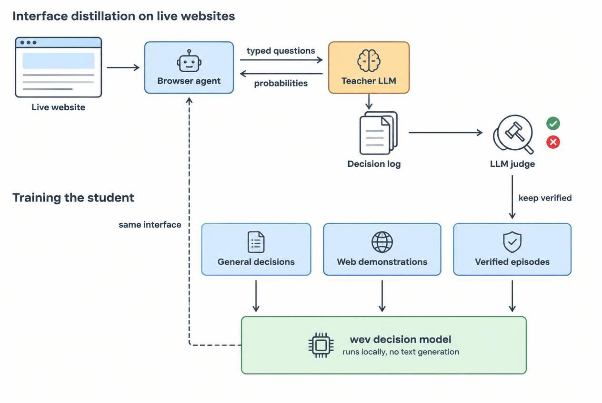
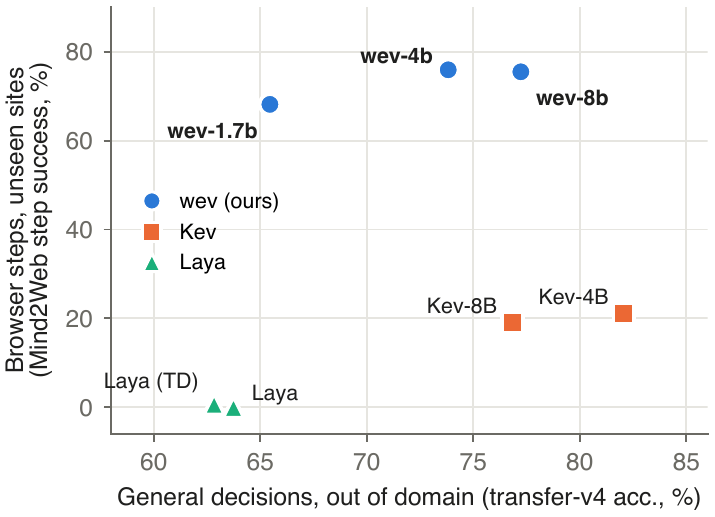

wev: Distilling LLM Browser Agents into
Open, Local System-One Decision Models
University of Electronic Science and Technology of China · *Equal contribution
A local decision model for agents: typed questions in, calibrated probabilities out, in one forward pass. No text generation, no API key.

Interface distillation: a teacher LLM answers a browser agent's typed requests on live websites, an LLM judge keeps the verified episodes, and the wev student serves the same interface locally.
Abstract
System-One decision models answer typed questions about a free-form state with a probability for every declared option, in one forward pass and without generating text, but the open models of this kind are trained on general decision data and reach at most 21% step success on browser steps from unseen websites. We observe that the typed interface between a browser agent and its System One is itself a source of supervision: a prompted LLM placed behind it while the agent works on live websites produces training data in exactly the decision model's format, and an LLM judge reading each episode's final page decides which episodes to keep. We combine this interface distillation with Mind2Web and NNetNav demonstrations converted to the same format, after auditing NNetNav's stopping labels, and with general decision corpora. The resulting open models, wev-1.7b, wev-4b and wev-8b, build on Qwen3 base models. wev-4b answers 76% of browser steps on unseen websites correctly and stays competitive on general decision benchmarks. As the System One of an open browser agent, it completes as many held-out live-website tasks as its LLM teacher, at 15–320 ms per decision on one consumer GPU.
Results

Only wev is strong on both browser steps and general decisions.
| Model | Browser step | Transfer | Typed-dec. |
|---|---|---|---|
| wev-4b | 75.9 | 73.8 | 79.4 |
| wev-8b | 75.5 | 77.2 | 79.1 |
| wev-1.7b | 68.2 | 65.5 | 79.5 |
| Kev-4B | 21.2 | 82.1 | 65.1 |
| Kev-8B | 19.0 | 76.8 | 62.7 |
| Laya (typed-dec.) | 0.7 | 62.8 | 76.8 |
| Laya | 0.0 | 63.7 | 36.2 |
Test splits, same scorer for every model. Browser step: Mind2Web step success on unseen websites. Transfer: Kev transfer-v4, out of domain for all models. Typed-dec.: typed-decisions, on which wev and Laya (typed-dec.) train.
Models
| Model | Size | Best for | General decision | Browser step |
|---|---|---|---|---|
| wev-4b | 8.1 GB | default; best on live websites | 15 ms | 217 ms |
| wev-8b | 15.2 GB | most accurate out of domain | 21 ms | 322 ms |
| wev-1.7b | 3.5 GB | laptops; the fastest | 10 ms | 91 ms |
Median latency on one RTX 5090 (bf16), one request at a time.
Quickstart
pip install "wev-ai[serve]"
import wev
m = wev.load("alanhuangya/wev-4b")
out = m.predict(
state="Refund request: order #4411 arrived damaged, customer attached photos.",
questions={"action": {"type": "choice", "instructions": "What should support do?",
"criteria": {"refund": "Refund the order.", "replace": "Ship a replacement.",
"escalate": "Send to a human agent."}}},
)
# or serve a drop-in POST /v1/systemone endpoint
wev serve --model alanhuangya/wev-4b --port 8009Citation
@misc{huang2026wev,
title = {wev: Distilling LLM Browser Agents into Open, Local System-One Decision Models},
author = {Huang, Jun and Ren, Xin},
year = {2026},
publisher = {Zenodo},
doi = {10.5281/zenodo.22941164},
url = {https://doi.org/10.5281/zenodo.22941164}
}